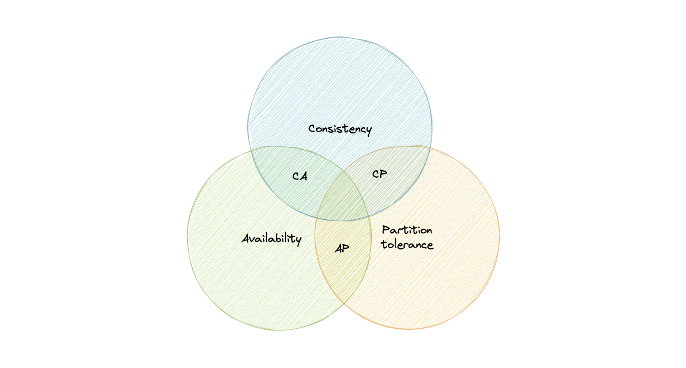
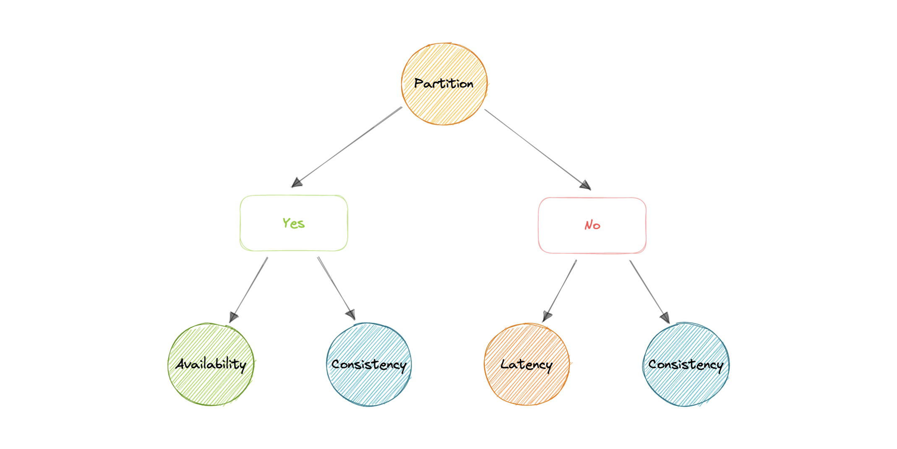
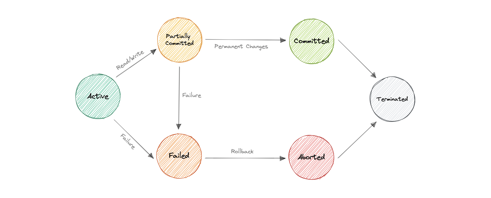
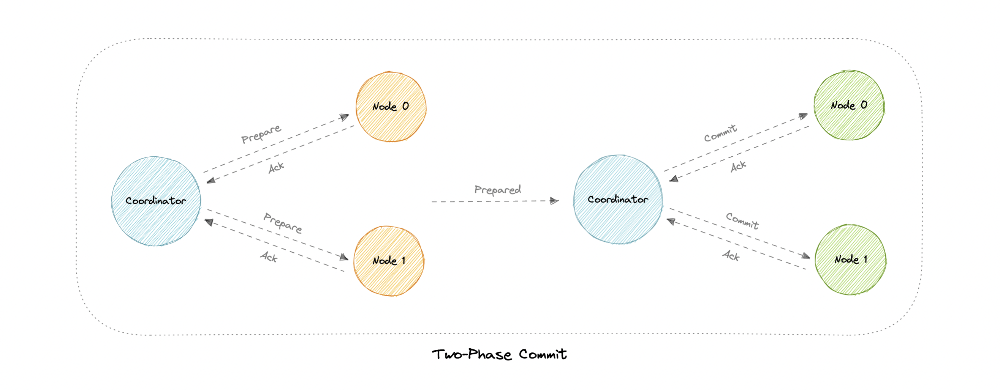
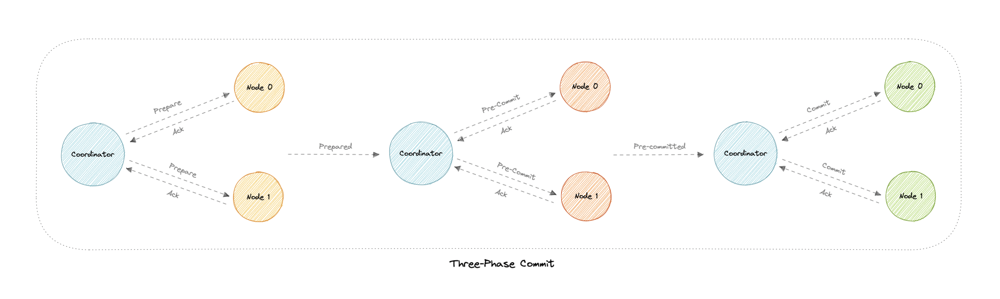
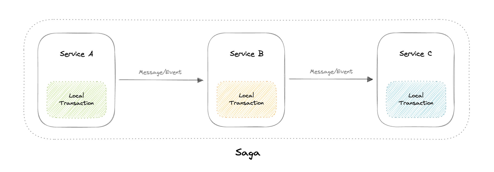

Nhất quán dữ liệu: ACID/BASE, CAP, Transactions
Những đánh đổi cốt lõi khi giữ dữ liệu nhất quán trong hệ phân tán — chủ đề "kinh điển" của mọi buổi phỏng vấn system design.
ACID vs BASE
| ACID (thường ở SQL) | BASE (thường ở NoSQL) |
|---|---|
| Atomic — tất cả thành công hoặc rollback hết. | Basic Availability — phần lớn thời gian hoạt động. |
| Consistent — DB luôn hợp lệ sau transaction. | Soft-state — trạng thái có thể chưa nhất quán. |
| Isolated — các transaction không tranh chấp. | Eventual consistency — cuối cùng sẽ nhất quán. |
| Durable — đã commit thì tồn tại kể cả khi sự cố. | (read vẫn được dù có thể trả dữ liệu cũ) |
ACID = nhất quán mạnh, đơn giản cho lập trình viên (hợp khi dữ liệu phải tin cậy tuyệt đối, vd ngân hàng). BASE = nhất quán cuối cùng, đổi lấy scale & resilience (nhưng dev phải cẩn thận hơn). Không có đáp án đúng tuyệt đối — chọn theo yêu cầu.
Định lý CAP ⭐
Một hệ phân tán chỉ đạt được 2 trong 3: Consistency, Availability, Partition tolerance.
- Consistency: mọi client thấy cùng dữ liệu tại cùng thời điểm, bất kể nối tới node nào.
- Availability: mọi request đều nhận phản hồi, kể cả khi vài node chết.
- Partition tolerance: hệ thống vẫn chạy dù mạng bị chia cắt / mất gói.
Mạng không bao giờ đáng tin tuyệt đối → hệ phân tán buộc phải chọn Partition tolerance (P). Điều này biến CAP thành đánh đổi giữa C và A.
| Loại | Đạt | Khi có partition | Ví dụ |
|---|---|---|---|
| CA | Consistency + Availability | Không hoạt động được nếu có partition | PostgreSQL, MariaDB |
| CP | Consistency + Partition tol. | Tắt node không nhất quán đến khi sửa xong | MongoDB, HBase |
| AP | Availability + Partition tol. | Vẫn phục vụ (có thể trả dữ liệu cũ), sync lại sau | Cassandra, CouchDB |

Định lý PACELC
Mở rộng của CAP (do Daniel J. Abadi): nếu Partition (P) → chọn A hoặc C; Else (E, lúc bình thường) → chọn Latency (L) hoặc Consistency (C).
PACELC bổ sung điều CAP thiếu: độ trễ (latency). Vì theo CAP, một DB trả lời sau 30 ngày vẫn tính là "available" — vô lý với thực tế.

Transactions
Một transaction là chuỗi thao tác coi như một đơn vị công việc — tất cả thành công hoặc thất bại. Các trạng thái:

Distributed Transactions
Thao tác trên ≥2 database, cần phối hợp commit/rollback như một đơn vị: tất cả commit, hoặc tất cả abort.
| Kỹ thuật | Cách hoạt động |
|---|---|
| 2PC (Two-Phase Commit) | Coordinator điều phối: (1) Prepare — thu thập đồng thuận; (2) Commit — nếu mọi node "prepared" thì commit, ngược lại rollback. Nhược: là blocking, coordinator chết thì kẹt. |
| 3PC (Three-Phase Commit) | Thêm pha Pre-commit giữa Prepare & Commit → mỗi pha có thể timeout, giảm vấn đề blocking của 2PC. |
| Saga | Chuỗi local transaction; mỗi cái phát event kích hoạt cái tiếp theo. Nếu lỗi → chạy compensating transaction để hoàn tác. Phối hợp qua Choreography (event) hoặc Orchestration (điều phối viên). |



Khó debug, dễ phụ thuộc vòng (cyclic), thiếu cô lập dữ liệu (durability challenges), khó test (phải chạy tất cả service). Nhưng Saga là lựa chọn phổ biến cho transaction qua nhiều microservice (xem Bài 9 & 11).
ACID (nhất quán mạnh, SQL) vs BASE (nhất quán cuối, NoSQL). CAP: chọn 2/3, thực tế phải có P → đánh đổi C vs A (CP vs AP). PACELC thêm yếu tố latency. Distributed transaction: 2PC (blocking), 3PC (thêm pre-commit), Saga (local tx + compensating).